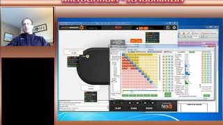

Page2
Hand 15
II use flopzilla pro to do rangy myself and the villain who opens. The villain opens in middle postion. He opens 20 percent of the time.Why does he min raise?
Hand 14
In this video I practice hand reading by
reading the villains range. I realize I only have 4 hands on my
opponent. The villain min bets into me on two streets and calls the
raises. Seems like a trap.
Hand 13
In this video I practive hand reading by reading the villains ranges. I have 20 hands on this fishy villain and he has a 75 percent cold call calling range. I sucessfully range him down from 460 combos to 135. I get it all in on the river to double up. The hand that villain showed up with on the river was in the range I had him narrowed down to this time. Sucess!
Hand 12
In hand 12 I range the villain in the small blind with a 16% cold
call range, 66%-fold to steal and a resteal of 1%. I start him out
with 189 combos and narrow him down but do not successfully find his
hand in my ranges. Would you have played this hand differently?
Leave comments in the video.
Hand 11

In this was a quick hand with a villain with not much information on
Hand 10
In hand 10 I try to steal from the sb with 26
of diamonds against a Big Blind who folds to much. I fell right into
his trap. I should have known he was holding something decent.
Page2